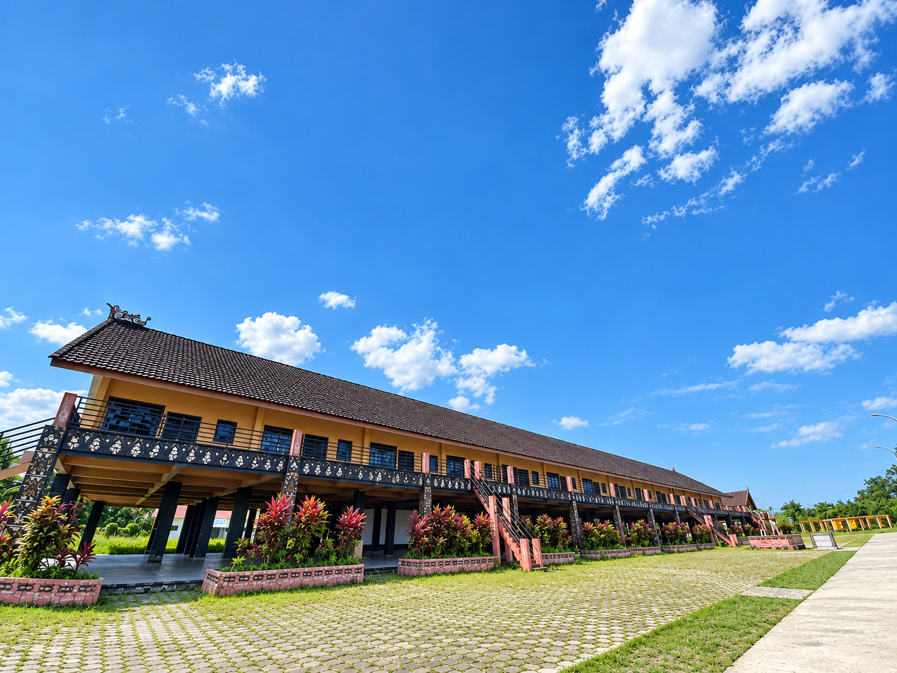
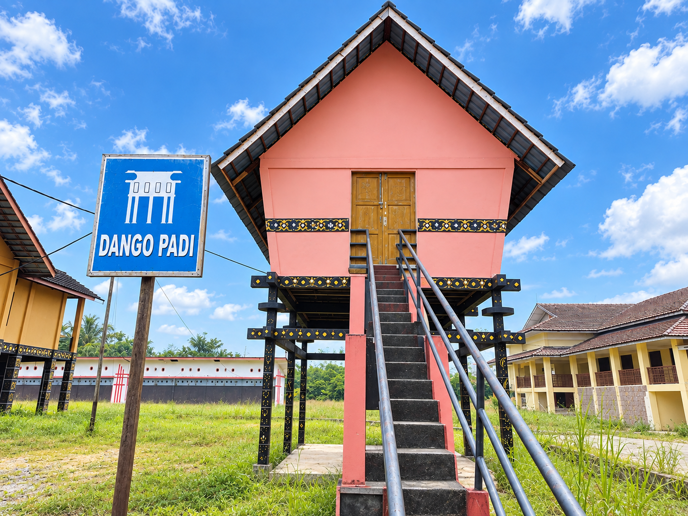
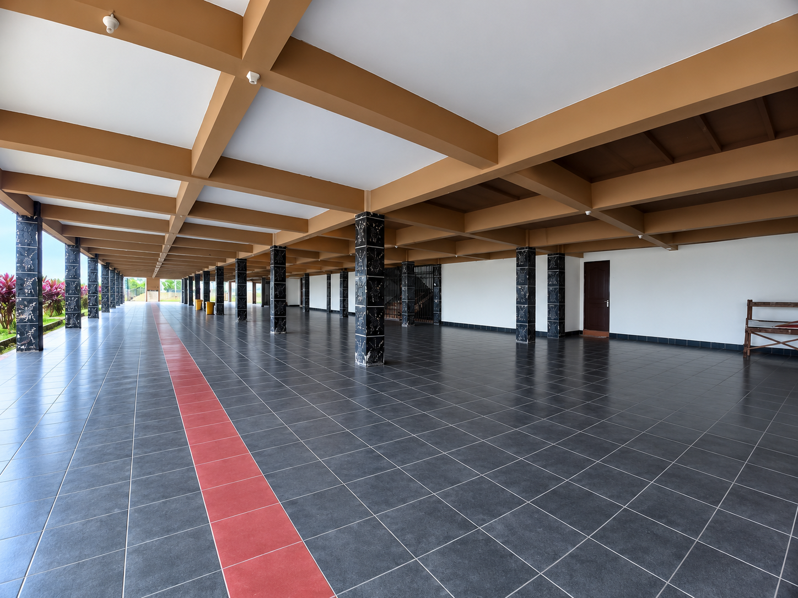
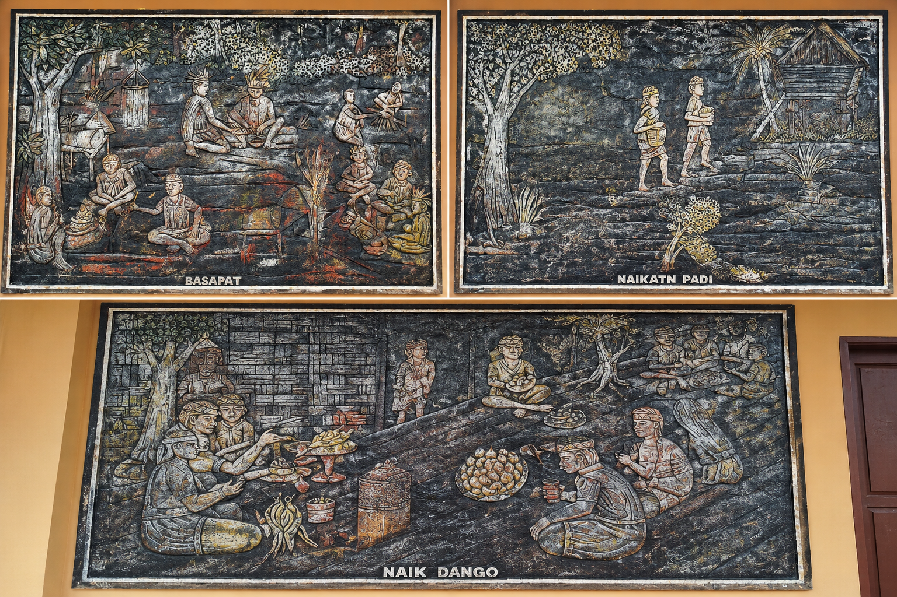
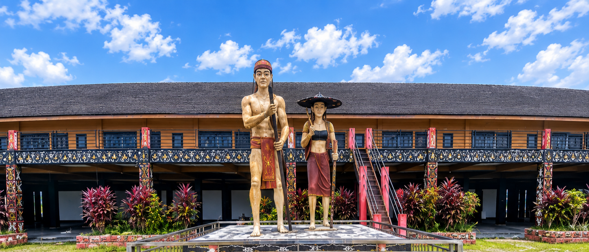

Rumah Radakng Aya yang terletak di kawasan Ngabang, Kabupaten Landak, merupakan replika sekaligus simbol kemegahan rumah adat panjang (radakng) tradisional suku Dayak. Bangunan ini berdiri megah sebagai pusat kebudayaan, seni, dan pariwisata lokal yang merepresentasikan nilai-nilai luhur kehidupan komunal masyarakat Dayak di Kalimantan Barat.
Rumah Radakng Aya
Simbol Persatuan, Budaya, dan Identitas Masyarakat Dayak Landak
Tentang Rumah Radakng Aya Landak
Latar Belakang & Filosofi
Secara historis dan sosiologis, rumah panjang tradisional Dayak bukan sekadar tempat tinggal, melainkan lambang kebersamaan, kesetaraan, dan semangat gotong royong yang tinggi antarwarga. Di bawah satu atap yang panjang, berbagai keluarga hidup berdampingan secara harmonis.
Di Kabupaten Landak, Rumah Radakng Aya sering kali difungsikan sebagai pusat pelaksanaan berbagai kegiatan adat penting—mulai dari upacara adat tahunan seperti Naik Dango, pagelaran seni budaya, hingga tempat musyawarah masyarakat. Dengan arsitektur kayu yang khas, tiang-tiang penyangga yang kokoh, serta ukiran ornamen tradisional yang sarat makna, bangunan ini menjadi mahakarya arsitektur nusantara yang wajib dijaga dan diperkenalkan ke generasi luas.
Fungsi & Galeri Visual
Rumah Radakng Aya berfungsi sebagai tempat musyawarah adat, pelaksanaan upacara Naik Dango, dan pusat latihan seni budaya Dayak.

Balai Utama Rumah Radakng
Balai utama merupakan ruang terbuka yang berfungsi sebagai pusat aktivitas komunal. Di sinilah berbagai kegiatan penting dilaksanakan, mulai dari musyawarah adat, upacara Naik Dango, hingga pagelaran seni budaya. Arsitektur ruang ini dirancang untuk menampung banyak orang sekaligus, mencerminkan nilai kebersamaan dan kesetaraan dalam masyarakat Dayak.

Dango Padi
Merupakan lumbung atau tempat penyimpanan padi tradisional milik masyarakat Dayak setelah masa panen usai.

Area Lantai Bawah / Kolong
Area terbuka di bagian bawah bangunan panggung yang difungsikan sebagai ruang serbaguna untuk penyelenggaraan berbagai kegiatan, seperti acara UMKM, bazar, tempat berkumpul, maupun area bersantai bagi para pengunjung.

Relief Dinding Tradisi
Panel relief dinding yang menggambarkan alur tradisi berladang dan kehidupan sosial suku Dayak, mulai dari proses awal membuka lahan (Basapat), membawa hasil panen (Naikatn Padi), hingga puncaknya pada upacara syukur (Naik Dango). Tiga panel ini merupakan perwakilan dari total 14 relief yang ada di kawasan Rumah Radakng Aya.

Patung Adat Dayak
Pasangan patung berbusana adat tradisional Dayak yang berdiri di area depan sebagai visualisasi busana, atribut adat, serta penyambut simbolis bagi setiap pengunjung yang datang.
Informasi Kunjungan
Kunjungi Rumah Radakng Aya dan rasakan pengalaman budaya yang tak terlupakan. Berikut informasi penting untuk perencanaan kunjungan Anda.